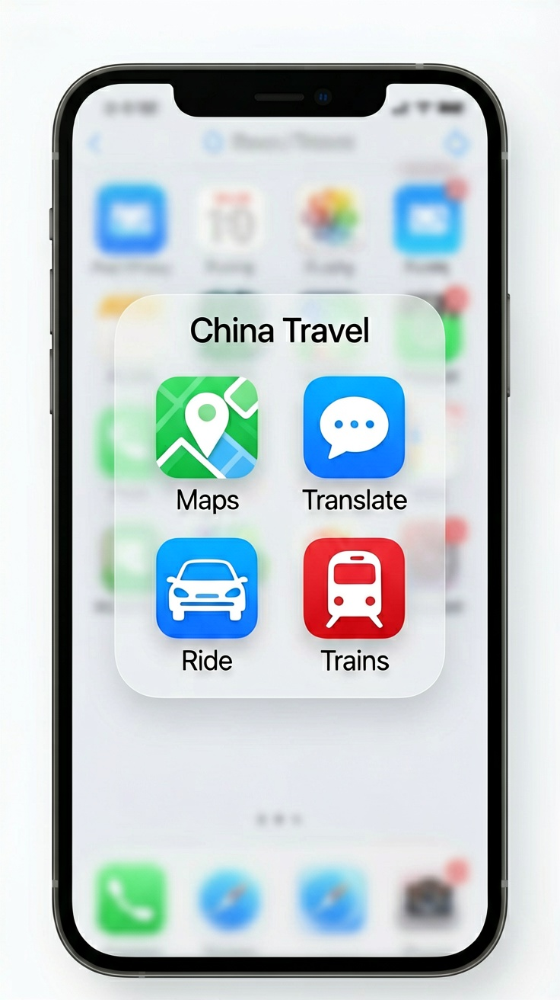
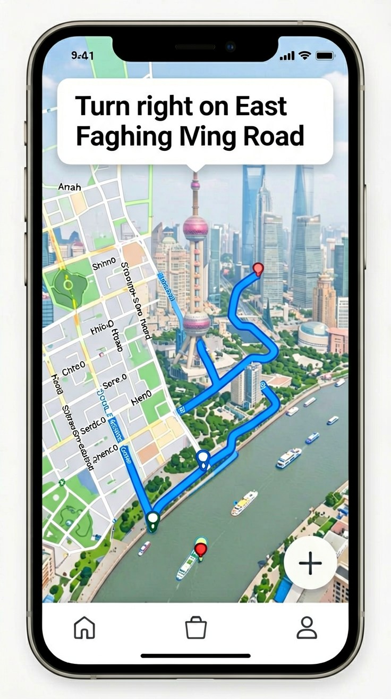
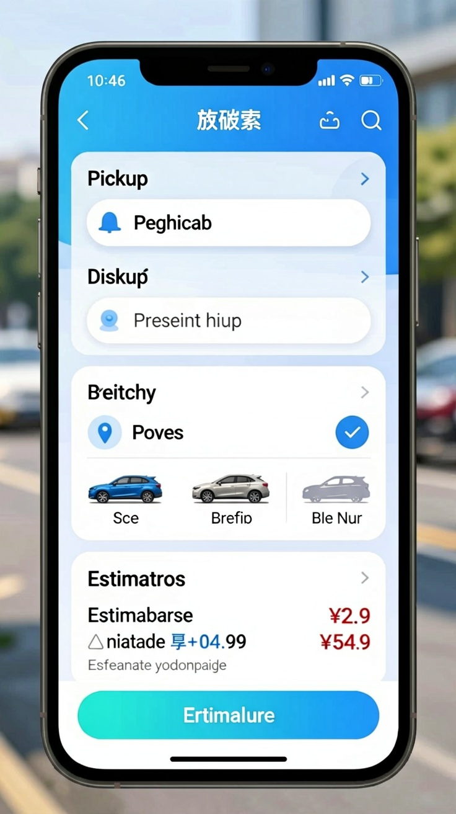
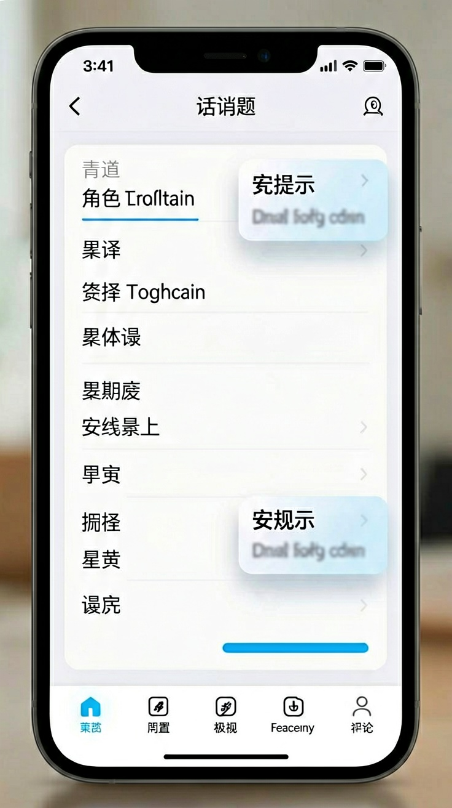
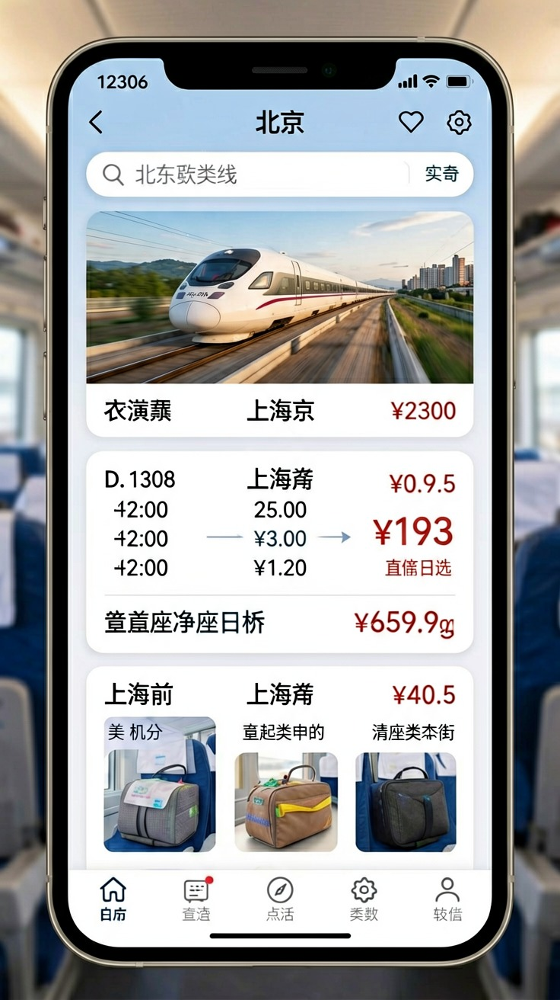
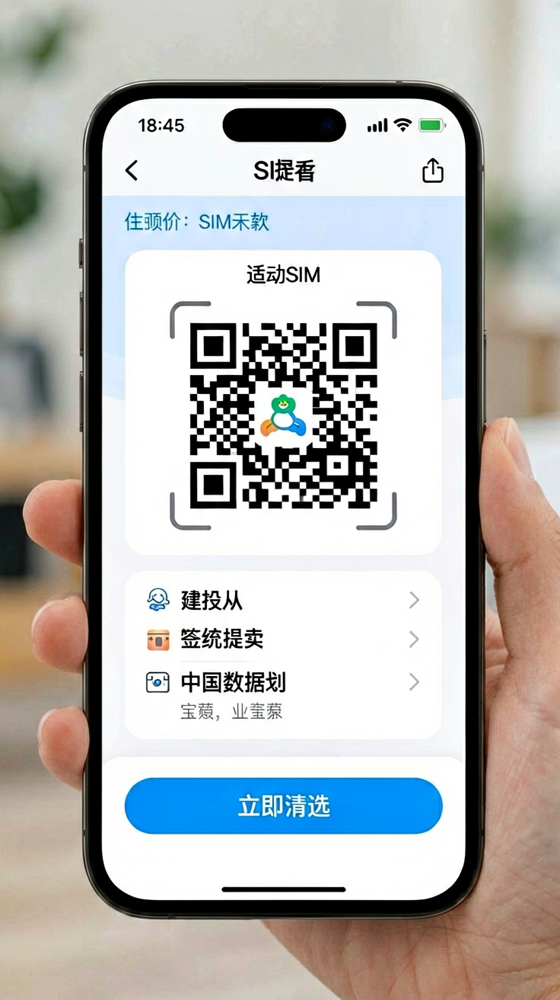

Last updated: June 2026.

You land in China, walk out of the airport, and pull out your phone. You open Google Maps to find your hotel. Nothing loads properly — the pin jumps across the street, directions are off by a block, and transit routes are missing entirely. You try to hail a taxi. The driver does not understand your destination. You pull up Google Translate — it will not connect. These are not edge cases. They are what happen when you arrive with the wrong apps on your phone.
China's digital ecosystem is self-contained. The apps you use at home — Google Maps, Uber, WhatsApp — either do not work or are severely limited inside the country. But a small set of apps, installed before your flight, bridges the gap completely. This article covers the five categories every traveler needs: maps, ride-hailing, translation, train booking, and internet connectivity. It tells you which ones to install, how to set them up, and what to expect once you arrive.
One note before you start: download every app listed below while you are still in your home country. Many Chinese app stores and download services are difficult to access from outside China, and the reverse is also true — once you are inside China, accessing Google Play or the international Apple App Store may require a VPN you have not set up yet.

If you rely on Google Maps for navigation, your first hour in China will be disorienting. Google Maps uses a coordinate system that is legally offset from China's official mapping standard. The result: your blue dot hovers one street over from where you are standing, transit routes are unreliable, and walking directions often lead to dead ends.
The solution depends on which phone you carry. If you use an iPhone, Apple Maps works correctly in China. It pulls its map data from Amap (高德地图), the country's dominant navigation platform, but displays street names, transit stations, and points of interest in English. You can search for destinations by their English names and get accurate walking, transit, and driving directions without reading a single Chinese character. Bus and subway routes are integrated, and live transit updates work in most major cities.
If you use an Android phone, download Amap (高德地图). Its interface is primarily in Chinese, but you can search for destinations in English and the app attempts to match them to its internal POI database. It is not as seamless or accurate as Google Maps, but it will get you from one point to another. Download it and test it before you travel.

Taxis in China rarely involve English. Street hailing works in major cities but communicating your destination — an address you cannot pronounce for a driver who cannot read pinyin — turns a five-minute ride into a prolonged negotiation. Ride-hailing apps eliminate this entirely by locking in the destination before the trip begins.
The most practical option for travelers is the DiDi Mini-Program inside Alipay. Do not download the standalone DiDi app — its interface is entirely in Chinese and requires a Chinese phone number for full functionality. Inside Alipay, open the DiDi Mini-Program by tapping "DiDi" in the Transport section. The interface includes an English-language toggle. You enter your pickup point and destination in English, see the estimated fare in yuan before confirming, and choose from vehicle types including Express (standard), Premier (higher-end), and taxi. Payment happens automatically through Alipay — no cash, no card, no conversation with the driver.
DiDi covers all major cities and most mid-sized ones across China. In smaller towns, availability drops, but that is the exception rather than the rule for most tourist routes. The Mini-Program also supports ride scheduling — useful for early-morning airport runs — and real-time location sharing so someone back home can track your trip.
Beyond DiDi, Alipay's Transport section includes integrated public transit QR codes for many cities. In Beijing, Shanghai, Shenzhen, and dozens of other cities, you can scan a single QR code through Alipay to ride the subway or bus. No separate transit card, no ticket machine, no queue. The fare deducts from your Alipay balance automatically.

China does not block translation apps. What it blocks are the internet services some of them depend on. Google Translate works offline — but only if you pre-download the Chinese language pack before traveling. Without a VPN, the camera translation feature, where you hold your phone up to a menu and it overlays English text, will not function because it requires a live connection to Google's servers.
The most reliable setup combines two tools. Download Google Translate and its offline Chinese language pack before your flight. This covers text translation: typing in English and getting Chinese output, or pasting Chinese text and reading the English result. For camera translation, install Baidu Translate (百度翻译) alongside it. Baidu operates on domestic servers, so its camera mode works at full speed without a VPN. It handles Chinese menus, street signs, product labels, and short documents accurately enough for practical use. The app also includes a conversation mode for back-and-forth spoken translation, useful when checking into a hotel or ordering at a small restaurant.
One practical tip: Baidu Translate requires a Chinese phone number to register. If you do not have a Chinese SIM card, use the app in guest mode — it still supports camera and text translation without an account. Another option, Microsoft Translator, works inside China and does not require registration.

China's high-speed rail network is the backbone of intercity travel. Tickets are sold primarily through 12306, the national railway's official platform. The 12306 app has a functional English interface, but it has a well-known quirk: foreign passports cannot be entered directly in the app. You must first register your passport at a railway station ticket counter, after which the system links your passport number to your 12306 account, allowing online booking.
The registration process takes about five minutes at any station. Bring your passport and go to a staffed ticket window. The attendant enters your passport details into the system, and once saved, you can book tickets online through the 12306 app or website. Without this one-time registration, you cannot buy train tickets through the official platform.
If you prefer not to deal with 12306, third-party platforms like Trip.com (formerly Ctrip) offer an alternative. Trip.com lets you search train schedules and book tickets using a foreign passport without in-person registration. The trade-off: Trip.com charges a small booking fee per ticket, usually around 10–20 yuan ($1.50–3 USD). For most travelers, this fee is worth skipping the station visit, especially if your itinerary involves only a few train rides.
On the train, ticket checks are routine. Keep your passport handy — conductors scan the passport number against their manifest when they walk through the carriage. Printed confirmation emails or screenshots from Trip.com are accepted as proof of purchase, but station staff and turnstiles may require the physical passport to let you through.

China's internet operates behind the Great Firewall, which blocks Google services, WhatsApp, Instagram, Facebook, X, and many Western news and media sites. A physical Chinese SIM card gives you mobile data, but the data routes through domestic DNS, which means all of those blocked services stay blocked. To use the apps you rely on — including Google Translate, WhatsApp for staying in touch, and Instagram for sharing your trip — you need a way around the firewall.
The simplest solution is an eSIM with a data-only plan. Providers such as Airalo, Nomad, and Holafly sell China plans that route your traffic through servers in Hong Kong, Singapore, or Japan. Because the data technically originates outside mainland China, it bypasses the firewall entirely. Google, WhatsApp, and Instagram load as they do at home. The critical step: purchase and activate the eSIM before your flight. Once you are inside China, many eSIM provider websites and apps are themselves blocked, making last-minute activation difficult or impossible.
If your phone does not support eSIM, or if you choose a physical Chinese SIM for lower cost, you will need a VPN. Install it, configure it, and test it before departure. Free VPNs are unreliable inside China — they tend to work for a day or two before their servers get blocked. Paid VPNs with a record of operating inside China are the safer route. Be aware that VPNs introduce two practical annoyances: they slow your connection speed, and some Chinese apps — particularly banking and payment apps — may refuse to run while a VPN is active. Expect to toggle your VPN on and off throughout the day, depending on which app you are using.
Hotel and café Wi-Fi sits behind the same firewall as mobile data, so connecting to local Wi-Fi without a VPN changes nothing — you still cannot reach blocked services. Public Wi-Fi in China also frequently requires a Chinese phone number for SMS verification to log in, a hurdle that physical SIM users clear but eSIM users (who have a data-only plan without a Chinese number) do not.
The practical recommendation: if your phone supports eSIM, buy a China data plan before departure. It is the lowest-friction way to stay connected, and it makes every other app in this article usable from the moment you land. If you need a local number for restaurant waitlists or hotel contact, pair the eSIM with a minimal physical SIM or use WeChat as your contact method instead.
This article is based on information as of June 2026.
Sources
App features, interfaces, and availability may change. Verify the latest app versions and policies before your trip.